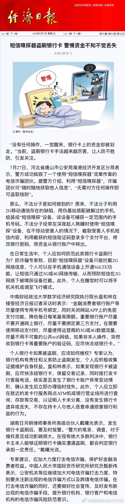

“金融消费者银行账户等尽量使用专用手机号绑定，同时关闭网站APP上的免密支付功能，降低每日每笔最高限额。重要银行账户尽量不要开通网上银行，尽量不要绑定第三方支付。在需要使用移动支付时，尽量使用运营商的3G或4G数据流量，尽量不用不可靠的公共wifi网络。”
@蓝鲸财经记者工作平台:
【#短信嗅探器盗刷银行卡#，警惕资金不知不觉丢失 】
】
“没有任何操作，一觉醒来，银行卡上的资金却被划走。”当前，盗刷银行卡手法越来越厉害，让人防不胜防，引发关注。7月27日，河北省唐山市公安局海港经济开发区分局表示，警方成功捣毁了一个使用“短信嗅探器”流窜作案的电信诈骗团伙。据警方介绍，利用“短信嗅探器”，诈骗团伙可“随时随地获取他人信息”，“无需对方任何操作即可盗取钱财”。
不法分子利用2G移动通信存在的缺陷，用伪基站搭配破解过的手机，组装成“短信嗅探”设备，该设备可捕获一定范围内的手机号码。不法分子经常在深夜趁人熟睡时使用“短信嗅探”设备，在不惊动受害人的情况下，截取受害人手机短信内容，利用截获的短信验证码登录多个支付平台，修改银行密码，将资金从银行账户中转出。
日常生活中，个人应如何防范此类银行卡盗刷行为？防诈骗专家称，目前“短信嗅探器”设备只能拦截2G网络信息，个人可以在手机通信设备上开通VoLTE功能，让短信只通过3G或4G网络传输，从而预防短信在2G网络下被嗅探设备拦截。此外，个人在睡觉时可以将手机关机或调至飞行模式。
中南财经政法大学数字经济研究院执行院长盘和林表示：“金融消费者银行账户等尽量使用专用手机号绑定，同时关闭网站APP上的免密支付功能，降低每日每笔最高限额。重要银行账户尽量不要开通网上银行，尽量不要绑定第三方支付。在需要使用移动支付时，尽量使用运营商的3G或4G数据流量，尽量不用不可靠的公共wifi网络。如果非本人操作，突然收到银行卡等重要账户的验证码，应尽快冻结银行卡。”（经济日报）
“没有任何操作，一觉醒来，银行卡上的资金却被划走。”当前，盗刷银行卡手法越来越厉害，让人防不胜防，引发关注。7月27日，河北省唐山市公安局海港经济开发区分局表示，警方成功捣毁了一个使用“短信嗅探器”流窜作案的电信诈骗团伙。据警方介绍，利用“短信嗅探器”，诈骗团伙可“随时随地获取他人信息”，“无需对方任何操作即可盗取钱财”。
不法分子利用2G移动通信存在的缺陷，用伪基站搭配破解过的手机，组装成“短信嗅探”设备，该设备可捕获一定范围内的手机号码。不法分子经常在深夜趁人熟睡时使用“短信嗅探”设备，在不惊动受害人的情况下，截取受害人手机短信内容，利用截获的短信验证码登录多个支付平台，修改银行密码，将资金从银行账户中转出。
日常生活中，个人应如何防范此类银行卡盗刷行为？防诈骗专家称，目前“短信嗅探器”设备只能拦截2G网络信息，个人可以在手机通信设备上开通VoLTE功能，让短信只通过3G或4G网络传输，从而预防短信在2G网络下被嗅探设备拦截。此外，个人在睡觉时可以将手机关机或调至飞行模式。
中南财经政法大学数字经济研究院执行院长盘和林表示：“金融消费者银行账户等尽量使用专用手机号绑定，同时关闭网站APP上的免密支付功能，降低每日每笔最高限额。重要银行账户尽量不要开通网上银行，尽量不要绑定第三方支付。在需要使用移动支付时，尽量使用运营商的3G或4G数据流量，尽量不用不可靠的公共wifi网络。如果非本人操作，突然收到银行卡等重要账户的验证码，应尽快冻结银行卡。”（经济日报）
- 